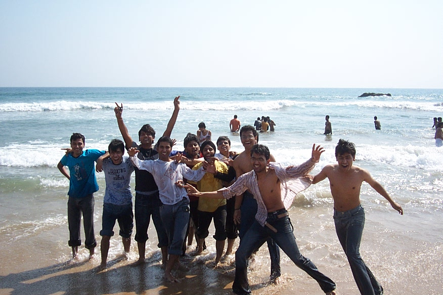

The Yearbook - Commemorating 2005-09!
Akash Agrawal's profile information
Name - Akash AgrawalBirthday - 1 March 1986
Email - akash.mail1986@gmail.com
Address - 2A, Chandra Lok Colony, Krishna Nagar, Mathura
Phone - 9885939890
Hobbies - TT,Computer Games, Photography
Testimonials written to Akash Agrawal
Akash Agrawal's Album
.jpg)
Felicity Fever ...

{kind=link}
Sagar Kinare ...

BB Court par bdays ...
Testimonials
For Maruti BorkerMaruti jise first year main P*** com bulate the uske PC ki location ki wajah se. We were in the same mentor group, or tab ye itna low voice main bolta tha ki sunayi bhi na de. In the starting we used to live in the same wing in GHEB. Jab bhi ghar jata tha to Dosa ya aisa hi kuch or leke ata tha jis par ham sab toot padte the.
Jab bhi iska naam ata hai to mujhe 2 incidents yaad ate hai. First is when he put some "Exclusive" pic in the wallpaper of guest login of his machine, and when we entered the workspace two girls of our batch were sitting on his machine, jise dekhte hi ham wapas room bhag gaye the

The second event is when I restarted his machine using remote login or khas bat ye thi ki at that time he was in a very advance level of some, again "Exclusive" game
 Exclusive bole to ***
Exclusive bole to *** 
Best of luck for your career
Keep smiling

For Deepti
She is one of the few girls in IIIT jinse main bat karta hoon. I will always remember those days of my intern at Philips Bangalore, when we used to have lunch together or wo bolti rahati thi or main sunta rahata tha ( main vese bhi bahut kam bolta hoon
). She loves chit-chating. Very gud in studies, CG bolti hai Hindi thodi weak hai but quite manageable.
Best of luck for Samvedna and of course You
Keep smiling
For Vipul Mittal
Mittal sahab ...
First year main mere bagal wali seat pe betha karta tha. Uske bad to koi class common hui hi nahin so interaction thoda kam ho gaya, but do batain jo abhi bhi yad hai wo likhoonga.
Pahli hai class ki. Ek din class ke beech main mujhe ek number se missed call ayi. Class ke bad maine workspace jake yahoo messanger se us number pe SMS kiya ki kiska number hai, to thodi der bad bagal wale system se awaj ayi ki abe c**** mera number hai

Or doosri bat hai Physics ke final exam ki. Vipul bhai mere age bethe the or invigilator bahut dheere dheere paper distribute kar raha tha, to vipul ne mujhe se kaha ki ye to bahut time laga raha hai. To maine kaha ki jada pad ke a gaya hai kya ?? then he said haan yar bat to sahi hai or phir age dekhne laga
He is a very good dancer.
Bhagwan kare ki tumhari MS jaldi hi poori ho jaye
Best of luck.
For Shashank Agrawal
Agrawal Ji, first year se ab tak inko isi nam se bulata raha hoon, or ye bhi mujhe isi nam se bulate hai
First year main during the C assignments, i came in touch with him. Hamare beech ek ankaha competition chalta rahata tha ki kauan pahle assignment karega or kiska solution jada accha hoga. Wo din hamesha yad rahenge.
Vese acades main to banda fodoo hai hi, TT bhi mast khelta hai. Ab kabhi kabhi main ise hara leta hoon
Iska thinking level jara hat ke hai. For exmple he is doing research under Dr. Kanan
 Vese to main bahut kam discussion karta hoon, but jab Agrawal ji ke sath hota hai to maja ata hai kyoonki topic bhi jara hatke hi hote hai
Vese to main bahut kam discussion karta hoon, but jab Agrawal ji ke sath hota hai to maja ata hai kyoonki topic bhi jara hatke hi hote hai 
Or haan ajamgad ko kese bhool sakte hai
Best of luck buddy
For Nitin Jain
Nitin Jain A.K.A. Ninja, Prince of Tikamgad (Or bhi hai par yaha batane ke liye nahin
)
Sabse pahle acades, ECE main concepts isse jada kisi or ke shayad hi clear ho. Communication (jo ki hamari degree ka ek abhinn hissa hai
) shayad kewal ise hi theek se samajh main ati hai, baki log to trial marte rahate hai
Second thing is games, jitna acades main accha hai utna games main bhi sound hai. Volleyball, TT, Cricket, Football, Athletics, Carrom, Fifa, CZ or bhi na jane kaun kaun se games ek dum mast tarike se khelta hai. Mera ek sapna hai ki ise 100 Mtr ki race main haraoonga
Now comes BC, iska room bc karne ke liye perfect jagah hai. Kisi bhi time iske room pe log ikattha hoke BC shuru kar dete hai.
Ghar ka khana, yummy. Iske room par hamesha kuch na kuch ghar ka bana hua rakha hota hai bas thoda dhoondna padta hai jis main hum log perfect ho chuke hai
Now a unique feature
of ninja. Apne niyamo ka ekdum pakka hai. Chahe kuch bhi ho jaye par apne niyam se nahin hat sakta, dude hats off for that 
Ek or khas bat hai ninja ke interpretation power. Kya bolega, kya samjhega koi nahin janta
in fact wo khud bhi nahin janta
By nature he is an adventure loving guy, masti karne ke liye hamesha tayar.
Ek iski gandi adat bhi hai. Har kam last moment par hi karta hai ( Dude sudharle is adat ko )
Ninja ka testimonial bina passport ke jikra kiye khatam nahin ho sakta. Aj kal IIIT main jis ko bhi passport banwana hota hai wo ninja ke pas hi ata hai jankari lene, or aisa kyoon ye batane ki jaroorat nahin hai kyoonki passport office ke jitne chakkar isne lagaye hai shayad hi kisi or ne lagaye ho, lekin phir bhi iska passport abhi tak nahin bana hai jiski wajah se GRE 2 bar postpone bhi kara chuka hai.
Best of luck buddy. Hope ki tujhe teri sharton wali biwi
 mil jaye
mil jaye For Richeek
Pichle testi main kuch batain raha gayi thi so socha ki ek or likh hi dalta hoon
Lets start from the first day in IIIT.
Main IIIT main building ke samne betha tha or hostel fee jama karne jana tha. Dimag main ye bhi tha ki yar room partner pata nahin kaun mil jayega. Tabhi samne se Motu ata dikhayi diya. Dekh kar feel ayi ki banda apne hi area ka hai. Mila, nam poocha, or jesa ki har kisi ke sath hota hai, mujhe bhi iska nam samjh nahin aya
Dubara poocha, lekin phir teesri bar nahin poocha kyoonki thoda ajeeb sound karta. Phir maine decide kiya ki jab form bharega tab dekh loonga. Or tab nam pata chala. Ye bat kabhi nahin bhoolunga
Phir hum room partner ban gaye for 2 years. Mera previous experience thoda kharab tha so mujhe time laga Motu se frank hone main, jiska mujhe hamesha afsos rahega (jo time maine waste kar diya). Room main kai bar jhagda bhi hua hamara or wo bhi pata hai kis bat par, ki table ka thoda sa cona mere bed ke ooper jada hai or uske bed ke ooper kam. But the best part was ki kabhi bhi bat age nahin badi. Main hamesha workspace se late ata tha, or Motu tab tak so jata tha. Phir main pahle bahar se light band kar deta tha or 2 min wait karne ke bad knock karta tha, tab kahi jake bhai sahab room kholte the. Or phir subah uth kar poochte the ki too under kese aya, room to band tha
Projects ki ek lambi list hai jo maine Motu ke sath kiye hai (Or sabhi main A mila hai).
Jane kitni bar bechara 9.0 ko touch karte karte rah jata tha

Ye un kuch bahut kam logon maine se ek hai jinhe main haq ke sath bolta hoon ki ye kam karna hai.
Iske 2 sapne hai, pahla mujhe peetna or doosra mujhe TT main harana. Doosra to ye kabhi kabhi poora bhi kar leta hai (jab main karne deta hoon to
), but pahle ke liye to pata nahin kab tak prepration karta rahega. Maine "Gold" ka dat book kara liya hai bhai, kab todega
Iska highly advanced mobile
configurable processor wala lappy or bhi bahut kuch hai jo hamesha yad rahega, iski shakal bhi 
Again best wishes for your life, career .
For Richeek
Richeek Arya (Aligarh nam ke ek chote se gao ka ek thoda pada likha admi
) iske or bhi bahut sare nam hai but main "Motu"  bulata hoon. He is a fun loving guy with a very good sense of humor. Ajkal tension jada leta hai or kaam kam karta hai but full dedication se karta hai jo bhi karta hai He was my room partner for the first 2 years in IIIT. Mujhe jitni jada garmi lgti hai ise utni hi jada thand lagti hai but iske bawajood 2 sal aram se nikle all because he is quite "ADJUSTING" Crazy about PIZZA. Itna ki kai bar wo mera bill dene ko bhi tayar ho jata hai A very gud project partner (atleast for me). Sabse accha example to ye hai ki mujhe B.Tech honors mil rahi hai or wo bhi motu ki wajah se "K Community" ke nam se hi bhadak jata hai
bulata hoon. He is a fun loving guy with a very good sense of humor. Ajkal tension jada leta hai or kaam kam karta hai but full dedication se karta hai jo bhi karta hai He was my room partner for the first 2 years in IIIT. Mujhe jitni jada garmi lgti hai ise utni hi jada thand lagti hai but iske bawajood 2 sal aram se nikle all because he is quite "ADJUSTING" Crazy about PIZZA. Itna ki kai bar wo mera bill dene ko bhi tayar ho jata hai A very gud project partner (atleast for me). Sabse accha example to ye hai ki mujhe B.Tech honors mil rahi hai or wo bhi motu ki wajah se "K Community" ke nam se hi bhadak jata hai  but at the same time he has a soft corner for them also (i think so). Thoda sanki bhi hai. Ek bar Golkunda gaya tha bhari dopahar main akela kyoonki bas use jana tha phir chahe or koi jaye ya nahin. Ek or kam jis ke liye hamesha ready rahata hai wo hai Fight. IIIT main pata nahin kis kis se lad chuka hai (Bln, Ksn or pata nahin kaun kaun).Ise pareshan karne main bada maja ata hai Singing iska special talent hai Aj tak na jane kitni movies isne mere sath dekhi hai sirf isliye kyoonki wo movies mujhe dekhni hoti thi. Mujhe kahi bahar ghoomne jana ho ya khane jana ho to sabse pahla option hai kyoonki kabhi mana nahin karta. Kuch batain jo hamesha yad rahengi wo hai iska gana, iski dhurr dhurr karti hui TT ki service, iski tond or haan wo din jab hamne Ramu ko class main lock kiya tha Ek bat or Bday kisi ka bhi ho ise latain jaroor padti hai. 3rd year main networks ki classes bhi bahut udai hai hamne. Maine ise jagata tha or khud so jata tha or phir ye bhi so jata tha finally dono hi class nahin jate the. Proxy Jindabad ECE ke un chand khushnaseeb logon main se hai jinhe core ece ki job mili hai One more thing to mension here is his mob "The N100"
but at the same time he has a soft corner for them also (i think so). Thoda sanki bhi hai. Ek bar Golkunda gaya tha bhari dopahar main akela kyoonki bas use jana tha phir chahe or koi jaye ya nahin. Ek or kam jis ke liye hamesha ready rahata hai wo hai Fight. IIIT main pata nahin kis kis se lad chuka hai (Bln, Ksn or pata nahin kaun kaun).Ise pareshan karne main bada maja ata hai Singing iska special talent hai Aj tak na jane kitni movies isne mere sath dekhi hai sirf isliye kyoonki wo movies mujhe dekhni hoti thi. Mujhe kahi bahar ghoomne jana ho ya khane jana ho to sabse pahla option hai kyoonki kabhi mana nahin karta. Kuch batain jo hamesha yad rahengi wo hai iska gana, iski dhurr dhurr karti hui TT ki service, iski tond or haan wo din jab hamne Ramu ko class main lock kiya tha Ek bat or Bday kisi ka bhi ho ise latain jaroor padti hai. 3rd year main networks ki classes bhi bahut udai hai hamne. Maine ise jagata tha or khud so jata tha or phir ye bhi so jata tha finally dono hi class nahin jate the. Proxy Jindabad ECE ke un chand khushnaseeb logon main se hai jinhe core ece ki job mili hai One more thing to mension here is his mob "The N100"
And of course he is my best friend. Hope you will get the best always.
For Kapil Bajaj
KBC, is nam ke liye ye hamesha mujhe galiyan deta rahega. Filhal ye hamare batch ke most eligible bachelors main se ek hai. I'm a big fan of his dance which he did in our fresher's party. Worksapce main nfs ke session, iske room pe juniors ki raging, kuch khas movies ke dialogues jo ise yad ho gaye the
JV ke sessions jinhe jhelne main hamne kafi madad ki hai ek doosre ki. JV ka ekmatra fayda jo mujhe mila hai wo yahi ki kapil se dosti ho gayi thi. Or haan Vayu ki basketball ki team jo kapil ke bina adhoori rahati hai par ye bas practice main hi basket karta hai. In GHEB he was known for his updates. Log isse poochte the ki kuch naya aya hai kya DC par. He helped me a lot during the placements. Bande ne 2 din main poori OS pada di thi mujhe Or bhi na jane aise kitni batain hai jo bhooli nahi ja sakti ...For Aditya Singal
Adi, mad about movies. Hamare kuch interests milte hai jese comics padna, tt khelna
. Vese comics padne ke mamle main mujh se bahut age hai. The best part is that he is in dual degree or haan hamare college ka Kuber hai abhi to For Prateek G V
Prateek G V, in reverse Very Gentle Prateek. Bahut kam bolta hai. The most memorable moment was the party at his home.
For Harsh
H V Bansal, discussion ke liye hamesha ready. Most of the time iski grdan to tedi hi rahati hai, to hold the mobile, kandhe or kan ke beech main
Has very good public relations, always happy.For Bharat Sankhlecha
Chota bhartiya, library ki jitni books isne padi hongi utni shayad kisi or ne nahin padi hongi. Always busy. Nanhi si jan ko bahut kam hote hai.
For Saurav Khurana
Khurana, ise apni nayi nayi dresses main photo khichwane ka bada shok hai. Har bar jab bhi koi nayi dress try karta hai to pics jaroor khichwata hai different differen poses main joki obviously mast hoti hai (maine khichi hoti hai to kharab kese ho sakti hai
). Time management main no doubt #1. Kul mila ke bande ka tashan sabse alag hai For Yogendra Umesh Itankar
Yogi, the coolest one. Iski harkate to ultimate hoti hai. Yahan likhoonga to pata nahin kitne testi's likhne padenge. Jis bat ko ek bar smajh leta hai to i'm sure ki isse better us bat ko koi or nahin samjha sakta. Very innocent or iske mood pe depend karta hai sab kuch
For Subroto Sen
Bande ka confidance level to gajab ka hai. Ekdum cool rahta hai. Kahin khane jana ho to default company hai. Use poochne ki jaroorat nahin hoti bas batana hota hai ki kab or kaha jana hai and he will join for sure
Class main iske doubts  simply awesome. Ek or cheese jiske mension kiye bina iska profile adhoora hai wo hai iska database, jiske bare main jada bolne ki jaroorat nahin hai.
simply awesome. Ek or cheese jiske mension kiye bina iska profile adhoora hai wo hai iska database, jiske bare main jada bolne ki jaroorat nahin hai.